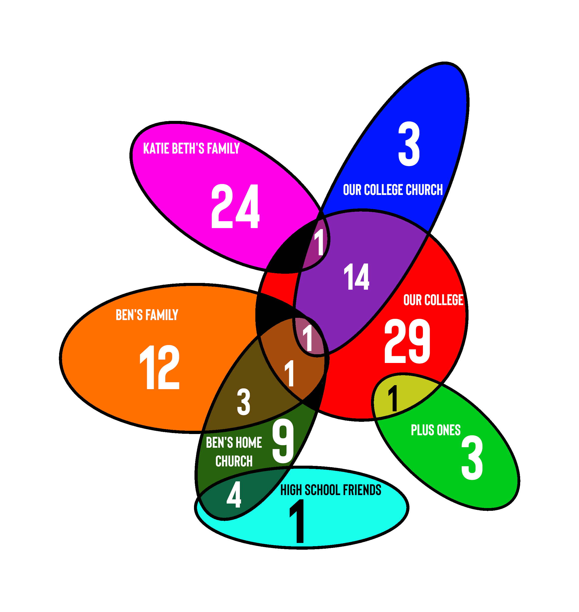

Relationships Among Wedding Guests
Curious to see what fraction of those who plan to attend my wedding are college friends, I categorized everyone who RSVPed "Yes" into the seven overlaping groups displayed on the diagram. The lack of overlap between the two large areas Ben's Family and Katie Beth's Family made me stop and think about how changing that is how marriage works. The two of us and our hypothetical descendants will occupy that space in any future Euler diagrams.
Notes:
1. Categorization was not a purely objective undertaking. Not only were the categories rather arbitrary with a rough heuristic of capturing the actual reasons people were invited, but some people were borderline. For example, an aunt or uncle by marriage is Family, but are they also technically a Plus One? I chose to say no, but that and other questions could have been answered differently.
2. This is a Euler diagram and not a Venn diagram. The distinction is sometimes considered fine, but I think it can be simply explained: unlike a Venn diagram, a Euler does not display every possible crossover episode. Note that my figure has no space for Katie Beth's Family+High School Friends, to give only one example.
3. The color intersections/areas are by no means meant to be precise/proportional.